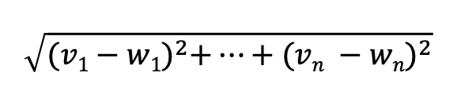
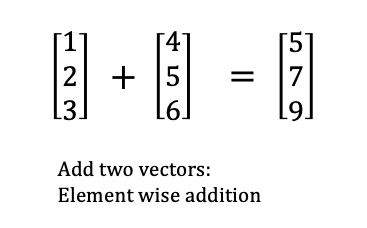
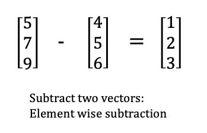
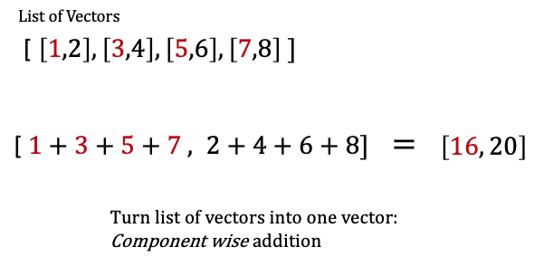
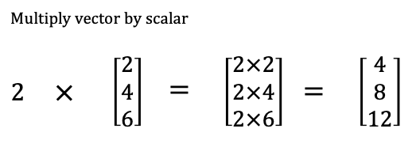
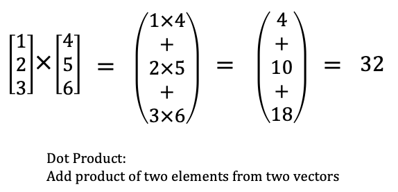
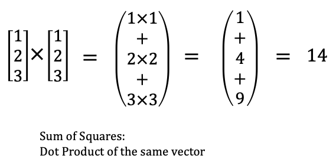
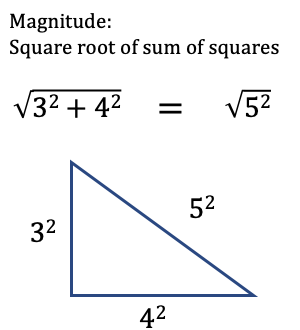
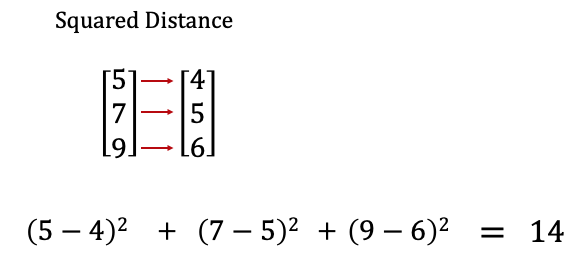

Data Science from Scratch (ch4) - Linear Algebra
Vectors & Matrices
Table of contents
Overview
We’ll see the from scratch aspect of the book play out as we implement several building block functions to help us work towards defining the Euclidean Distance in code:

While we don’t see its application immediately, we can expect to see the Euclidean Distance used for K-nearest neighbors (classication) or K-means (clustering) to find the “k closest points” ( source). (note : there are other types of distance formulas used as well.)
En route towards implementing the Euclidean Distance, we also implement the sum of squares which is a crucial piece for how regression works.
Thus, the from scratch aspect of this book works on two levels. Within this chapter, we’re building piece by piece up to an important distance and sum of squares formula. But we’re also building tools we’ll use in subsequent chapters.
Vectors
We start off with implementing functions to add and subtract two vectors. We also create a function for component wise sum of a list of vectors, where a new vector is created whose first element is the sum of all the first elements in the list and so on.
We then create a function to multiply a vector by scalar, which we use to compute the component wise mean of a list of vectors.
We also create the dot product of two vectors or the sum of their component wise product, and this is is the generalize version of the sum of squares. At this point, we have enough to implement the Euclidean distance. Let’s take a look at the code:
Example Vectors
Vectors are simply a list of numbers:
height_weight_age = [70,170,40]
grades = [95,80,75,62]
Add
You’ll note that we do type annotation on our code throughout. This is a convention advocated by the author (and as a newcomer to Python, I like the idea of being explicit about data type for a function’s input and output).
from typing import List
Vector = List[float]
def add(v: Vector, w: Vector) -> Vector:
"""Adds corresponding elements"""
assert len(v) == len(w), "vectors must be the same length"
return [v_i + w_i for v_i, w_i in zip(v,w)]
assert add([1,2,3], [4,5,6]) == [5,7,9]
Here’s another view of what’s going on with the add function:

Subtract
def subtract(v: Vector, w: Vector) -> Vector:
"""Subtracts corresponding elements"""
assert len(v) == len(w), "vectors must be the same length"
return [v_i - w_i for v_i, w_i in zip(v,w)]
assert subtract([5,7,9], [4,5,6]) == [1,2,3]
This is pretty much the same as the previous:

Componentwise Sum
def vector_sum(vectors: List[Vector]) -> Vector:
"""Sum all corresponding elements (componentwise sum)"""
# Check that vectors is not empty
assert vectors, "no vectors provided!"
# Check the vectorss are all the same size
num_elements = len(vectors[0])
assert all(len(v) == num_elements for v in vectors), "different sizes!"
# the i-th element of the result is the sum of every vector[i]
return [sum(vector[i] for vector in vectors)
for i in range(num_elements)]
assert vector_sum([[1,2], [3,4], [5,6], [7,8]]) == [16,20]
Here, a list of vectors becomes one vector. If you go back to the add function, it takes two vectors, so if we tried to give it four vectors, we’d get a TypeError. So we wrap four vectors in a list and provide that as the argument for vector_sum:

Multiply Vector with a Number
def scalar_multiply(c: float, v: Vector) -> Vector:
"""Multiplies every element by c"""
return [c * v_i for v_i in v]
assert scalar_multiply(2, [2,4,6]) == [4,8,12]
One number is multiplied with all numbers in the vector, with the vector retaining its length:

Componentwise Mean
This is similar to componentwise sum (see above); a list of vectors becomes one vector.
def vector_mean(vectors: List[Vector]) -> Vector:
"""Computes the element-wise average"""
n = len(vectors)
return scalar_multiply(1/n, vector_sum(vectors))
assert vector_mean([ [1,2], [3,4], [5,6] ]) == [3,4]
Dot Product
def dot(v: Vector, w: Vector) -> float:
"""Computes v_1 * w_1 + ... + v_n * w_n"""
assert len(v) == len(w), "vectors must be the same length"
return sum(v_i * w_i for v_i, w_i in zip(v,w))
assert dot([1,2,3], [4,5,6]) == 32
Here we multiply the elements, then sum their results. Two vectors becomes a single number (float):

Sum of Squares
def sum_of_squares(v: Vector) -> float:
"""Returns v_1 * v_1 + ... + v_n * v_n"""
return dot(v,v)
assert sum_of_squares([1,2,3]) == 14
In fact, sum_of_squares is a special case of dot product:

Magnitude
def magnitude(v: Vector) -> float:
"""Returns the magnitude (or length) of v"""
return math.sqrt(sum_of_squares(v)) # math.sqrt is the square root function
assert magnitude([3,4]) == 5
With magnitude we square root the sum_of_squares. This is none other than the
pythagorean theorem.

Squared Distance
def squared_distance(v: Vector, w: Vector) -> float:
"""Computes (v_1 - w_1) ** 2 + ... + (v_n - w_n) ** 2"""
return sum_of_squares(subtract(v,w))
This is the distance between two vectors, squared.

(Euclidean) Distance
import math
def distance(v: Vector, w: Vector) -> float:
"""Also computes the distance between v and w"""
return math.sqrt(squared_distance(v,w))
Finally, we square root the squared_distance to get the (euclidean) distance:
Summary
We literally built from scratch, albeit with some help from Python’s math module, the blocks needed for essential functions that we’ll expect to use later, namely: the sum_of_squares and distance.
It’s pretty cool to see these foundational concepts set us up to understand more complex machine learning algorithms like regression, k-nearest neighbors (classification), k-means (clustering) and even touch on the pythagorean theorem.
We’ll examine matrices next.
Matrices
The first thing to note is that matrices are represented as lists of lists which is explicit with type annotation:
from typing import List
Matrix = List[List[float]]
You might bet wondering if a list of lists is somehow different from a list of vectors we saw previously with the vector_sum function. To see, I used type annotation to try to define the arguments differently.
Here’s the vector_sum function we defined previously:
def vector_sum(vectors: List[Vector]) -> Vector:
"""Sum all corresponding elements (componentwise sum)"""
# Check that vectors is not empty
assert vectors, "no vectors provided!"
# Check the vectorss are all the same size
num_elements = len(vectors[0])
assert all(len(v) == num_elements for v in vectors), "different sizes!"
# the i-th element of the result is the sum of every vector[i]
return [sum(vector[i] for vector in vectors)
for i in range(num_elements)]
assert vector_sum([[1,2], [3,4], [5,6], [7,8]]) == [16,20]
Here’s a new function, vector_sum2 defined differently with type annotation:
def vector_sum2(lists: List[List[float]]) -> List:
"""Sum all corresponding list (componentwise sum?)"""
assert lists, "this list is empty!"
# check that lists are the same size
num_lists = len(lists[0])
assert all(len(l) == num_lists for l in lists), "different sizes!"
# the i-th list is the sum of every list[i]
return [sum(l[i] for l in lists)
for i in range(num_lists)]
assert vector_sum2([[1,2], [3,4], [5,6], [7,8]]) == [16,20]
I did a variety of things to see if vector_sum and vector_sum2 behaved differently, but they appear to be identical:
# both are functions
assert callable(vector_sum) == True
assert callable(vector_sum2) == True
# when taking the same argument, they both return a list
type(vector_sum([[1,2], [3,4], [5,6], [7,8]])) #list
type(vector_sum2([[1,2], [3,4], [5,6], [7,8]])) #list
# the same input yields the same output
vector_sum([[1,2],[3,4]]) # [4,6]
vector_sum2([[1,2],[3,4]]) # [4,6]
To keep it simple, in the context of matrices, you can think of vectors as the rows of the matrix.
For example, if we represent the small dataset below as a matrix, we can think of columns as variables like: height, weight, age; and each row as a person:
sample_data = [[70, 170, 40],
[65, 120, 26],
[77, 250, 19]]
By extension of rows and columns, we can write a function for the shape of a matrix. This below shape function takes in a matrix and returns a tuple with two integers, number of rows and number of columns:
from typing import Tuple
def shape(A: Matrix) -> Tuple[int, int]:
"""Returns (# of rows of A, # of columns of A)"""
num_rows = len(A)
num_cols = len(A[0]) if A else 0 # number of elements in first row
return num_rows, num_cols
assert shape([[1,2,3], [4,5,6]]) == (2,3) # 2 rows, 3 columns
assert shape(sample_data) == (3,3)
We can actually write functions to grab either a specific row or a specific columns :
Vector = List[float]
# rows
def get_row(A: Matrix, i: int) -> Vector:
"""Returns the i-th row of A (as a Vector)"""
return A[i] # A[i] is already the ith row
# column
def get_column(A: Matrix, i: int) -> Vector:
"""Returns the j-th column of A (as a Vector)"""
return [A_i[j]
for A_i in A]
Now, going beyond finding the shape, rows and columns of an existing matrix, we’ll also want to create matrices and we’ll do that using nested list comprehensions:
from typing import Callable
def make_matrix(num_rows: int,
num_cols: int,
entry_fn: Callable[[int, int], float]) -> Matrix:
"""
Returns a num_rows x num_cols matrix
whose (i,j)-th entry is entry_fn(i, j)
"""
return [[entry_fn(i,j) # given i, create a list
for j in range(num_cols)] # [entry_fn(i, 0), ...]
for i in range(num_rows)] # create one list for each i
Then we’ll actually use the make_matrix function to create a special type of matrix called the identity matrix:
def identity_matrix(n: int) -> Matrix:
"""Returns the n x n identity matrix"""
return make_matrix(n, n, lambda i, j: 1 if i == j else 0)
assert identity_matrix(5) == [[1, 0, 0, 0, 0],
[0, 1, 0, 0, 0],
[0, 0, 1, 0, 0],
[0, 0, 0, 1, 0],
[0, 0, 0, 0, 1]]
Summary
To be sure there are other types of matrices, but in this chapter we’re only briefly exploring its construction to prime us.
We know matrices can be used to represent data, each row in the dataset being a vector. Because we can also know a matrices’ column, we’ll use it to represent linear functions that map k-dimensional vectors to n-dimensional vectors.
Finally, matrices can also be used to map binary relationships.
Flashback to Ch.1
On our first day at DataScienster™ we were given friendship_pairs data:
friendship_pairs = [(0,1), (0,2), (1,2), (1,3), (2,3), (3,4),
(4,5), (5,6), (5,7), (6,8), (7,8), (8,9)]
These friendship_pairs can also be represented in matrix form:
# user 0 1 2 3 4 5 6 7 8 9
friend_matrix = [[0, 1, 1, 0, 0, 0, 0, 0, 0, 0], # user 0
[1, 0, 1, 1, 0, 0, 0, 0, 0, 0], # user 1
[1, 1, 0, 1, 0, 0, 0, 0, 0, 0], # user 2
[0, 1, 1, 0, 1, 0, 0, 0, 0, 0], # user 3
[0, 0, 0, 1, 0, 1, 0, 0, 0, 0], # user 4
[0, 0, 0, 0, 1, 0, 1, 1, 0, 0], # user 5
[0, 0, 0, 0, 0, 1, 0, 0, 1, 0], # user 6
[0, 0, 0, 0, 0, 1, 0, 0, 1, 0], # user 7
[0, 0, 0, 0, 0, 0, 1, 1, 0, 1], # user 8
[0, 0, 0, 0, 0, 0, 0, 0, 1, 0]] # user 9
This allows us to check very quickly whether two users are friends or not:
assert friend_matrix[0][2] == 1, "0 and 2 are friends"
assert friend_matrix[0][8] == 0, "0 and 8 are not friends"
And if we wanted to check for each user’s friend, we could:
friends_of_five = [i
for i, is_friend in enumerate(friend_matrix[5])
if is_friend]
friends_of_zero = [i
for i, is_friend in enumerate(friend_matrix[0])
if is_friend]
assert friends_of_five == [4,6,7]
assert friends_of_zero == [1,2]
Paul Apivat Hanvongse
Self-Employed | Getwyze
My interests include data visualization, data analytics and data science.